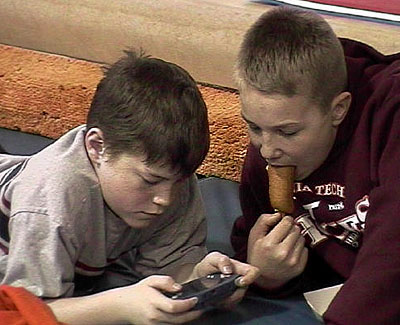
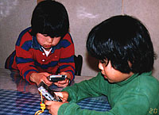
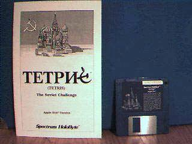
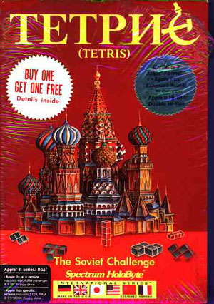
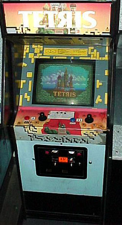
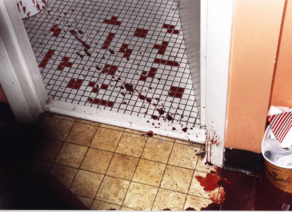

|
 TetrisTetris is a computer game involving a sequence of falling tetromino pieces which the user must first revolve into a desired position and subsequently pack into an increasingly dense rectangular array. As gameplay progresses, filled horizontal rows on the gameboard are cleared, allowing pieces above that row to drop by the height of one square. Gameplay stops when the next piece can no longer successfully enter the congested playing field. Typically Tetris players lose due to a series of poor judgement calls or because the speed of the game increases at higher levels -- but mathematicians around the world will insist that even a supercomputer masturbating itself with a game of extraordinarily slow solitaire Tetris will eventually lose due to the odd number of columns, the S-and Z-shaped pieces forcing empty squares in the grid, and the probability of long-term inequality in the stack sizes. The incremental escalation of the puzzle-piece gameplay is also a good metaphor for the dozens of quarreling software entities who tried to seize control of the Tetris empire when it first emerged, and a not-so-bad way to frame the double murder-suicide eventually carried out by the man responsible for introducing the game to the free world. Tetris was developed in the Soviet Union, circa 1985-6, by Alexey Pajitnov, Dima Pavlovsky, and Vadim Gerasimov. Pajitnov and Pavlovsky were computer engineers at the Computer Center of the Russian Academy of Sciences, while Gerasimov was a sixteen year old high school student who enjoyed writing directory encryption programs for MS DOS. Originally a spinoff of the ancient Roman puzzle Pentamino, the boys called their game Genetic Engineering and the play was vastly different: pieces were moved about the screen with cursor keys instead of being driven by gravity -- but Alexey came to insist the pieces fall from above, "into a glass, or bucket". As they developed the game, they had trouble finishing even the simplest of prototypes. The testing process was so addictive it seemed like they never had time to polish the code. They were indeed enthusiastic about developing a series of cheap and tawdry warez, but selling the fruits of their labors would prove difficult -- if not impossible -- due to strict commerce, distribution, and industry regulations imposed on all citizens of the Soviet Union. At the time, private businesses in the Soviet Union were illegal. The concept of intellectual property had not yet evolved, and individuals were prohibited from making privatized business arrangements involving abstract collateral like "computer software". Furthermore, the computer center at the Russian Academy of Sciences owned everything they made, since the code was written on the Computer Center's equipment and the Academy's time. Junior programmer Gerasimov -- working on Tetris purely for entertainment-- could never be formally hired by a Soviet government organization because at the time, he was underage. Alexey's efforts to market Tetris himself altogether failed until he discussed the matter with Vladimir Pokhilko, a clinical psychologist and longtime friend. Vladimir had been experimenting with using puzzles as psychological tests, and he immediately saw that Tetris would have mass appeal. It had to be sold, it was the greatest thing Russia had unleashed since chess. "The main part is visual insight," Alexey lectured at a conference. "You make your visual decision and it happens almost immediately. Insight means emotion: small, but many of them, every two, three seconds. The second mechanism is unfinished action. Tetris has many unfinished actions which force you to continue and make it very addictive. The third is automatization: in a couple of hours, the activity becomes automatic, a habit, a motivation to repeat." The two men began working together: they gave copies away to friends and leaked the game outside the country in a secretive end-run around Soviet politics. Tetris became the full-on focus of Alexey's time, and the game slowly evolved from a 4-color 320x200 text grid into the two-player graphical version we know today, complete with sound and music based on classical Russian folk songs ripped from the public domain. Alexey's decision to abandon all other gaming projects except Tetris was an upsetting blow to fellow programmer Dmitry, and it was here that the initial team of young programmers officially dissolved. A few months after Tetris started sneaking around the world, Robert Stein, CEO of the British software company Andromeda was vacationing in Budapest. He first laid eyes on the Apple II and Commodore-64 versions of Tetris -- but like an elite, bloodthirsty software pirate, he started selling versions to companies around the world (including Mirrorsoft U.K. and Spectrum Holobyte in the United States) without first securing legal rights to the game by going through the proper channels. Specifically, he failed to consult with the Russian ministry for import and export of software and hardware. By November, Stein's activities had been discovered by the Russian programmers, who now had big, angry choices to make. Do they keep quiet? Will they need a lawyer? Should they get the government involved? Before anyone could make a move, Stein further upped the ante: he wired a contract for the rights to Tetris directly to the Academy itself, then flew to Moscow to sign the contract. Fortunately or unfortunately, the meeting did not go well: the Academy really had no idea who he was or what he was talking about. Da stacken der blockenfalls? Officials met the eager clicking of his ballpoint pen with caution and obstinance. Meanwhile, the IBM PC version of Tetris released by Spectrum Holobyte and Mirrorsoft were causing a sensation. "Obscenely addictive," raved the reviews. The graphics were filled with Russian themes -- battle tanks, Red Square, space missions -- and Tetris was hailed as the first video game from behind the Iron Curtain. In less than a few months, Spectrum Holobyte contacted Alexey directly, expressing an interest in securing the genuine rights to a Tetris license. What resulted was catastrophic international situation pushing the programmers, a global software industry and everybody's lawyers toward a brand new entity: ELORG (Elektronorgtechnica), the Russian ministry for the import and export of software. It would now be up to the whims of one man, Alexander Alexinko of the Soviet government to determine where Tetris would be sold, and to whom the rights could be delineated. Alexinko had been briefed by a CBC Evening News interview with Pajitnov -- the real creator of Tetris -- and was able to rule that Stein had been selling rights to a product he never owned. By 1989, over a dozen software companies were knee-deep in Tetrisgate. Mirrorsoft and Spectrum Holobyte had already sub-licensed their rights to the game, effectively enabling Bullet-Proof Software (sub-licensed by Spectrum Holobyte) and Atari Games (sub-licensed by Mirrorsoft) to begin fighting over rights to Tetris in Japan, even as Nintendo of America planned to make Tetris packs. Tengen, Blue Planet Software, and Sony entered the ring as well -- effectively leaving the original Tetris programmers in the cold. In an interview with the San Francisco Examiner, Pajitnov acknowledged that he had acquiesced to Soviet demands to sign over the rights to Tetris because he feared reprisals. "I would have been in prison for sure had I gone directly to Nintendo," Pajitnov said. "I would have had to be a dissident and possibly be cheated for everything anyway. So it wasn't worth it." During the 10 years the Soviet government brokered deals with Nintendo, Atari and other video-game makers, Pajitnov lost an estimated $40 million in royalties. In 1996, the ELORG restrictions in the Soviet Union expired, and Tetris rights reverted to Pajitnov, who had since immigrated to the United States with psychologist friend Pokhilko. Together they launched AnimaTek International Inc., a software company specializing in computer-generated terrains and characters for the gaming industry. Almost immediately, the company began experiencing difficulties brought on by economic upheaval in Russia, where 70 of AnimaTek's 82 employees were stationed, and he was forced to mortgage his home for $386,000. Flustered, Pokhilko went on tour last to drum up support in hopes of landing $10 million in capital for an e-commerce firm. When that didn't work, on the night of September 22, 1998, Pokhilko struck his wife Elena in the head over a dozen times with a hammer, and stabbed her repeatedly. Then he stabbed his twelve year old son Peter with a long hunting knife nearly thirty times as he lay sleeping. Finally, Pokhilko stabbed himself in the throat. All three bodies were discovered by a family friend, who immediately called the police. Responding officers found Pokhilko face down, the knife still in his hand. Nearby, police located a terse suicide note, which read: I'VE BEEN EATEN ALIVE. JUST REMEMBER THAT I AM EXIST The Palo Alto police department, with assistance from the FBI, had no trouble fitting the pieces together. "There are different interpretations of what the note means," announced Sergeant Scott Wong. "But any interpretation of the person writing the note is that they were under some stress." Tetris is the largest selling and most recognized global brand in the history of interactive gaming software. It can be found on more than 60 platforms -- including cell phones, ATM machines in eastern countries, and handheld personal digital assistants. In 2004, it was estimated that over eighty million Tetris units had been sold. |